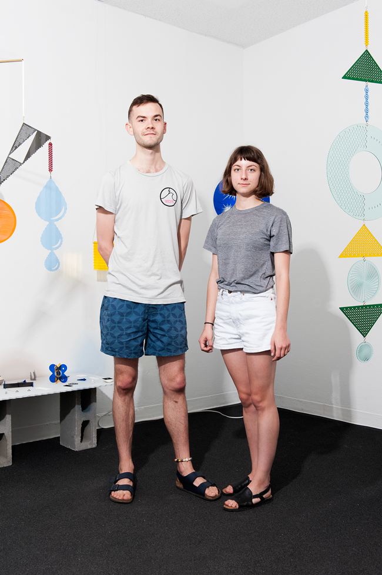

TILT is the joint practice of Tristan Scow and Lily Clark.

The two designers share an interest in shaping meditative, playful environments through objects that both produce and manipulate light. Their debut collection, Flicker Tonic, relies on a viewer to complete each object through careful, sustained looking.